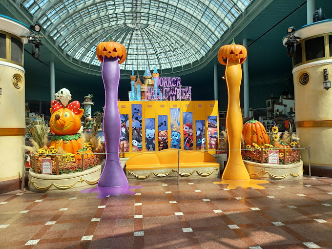
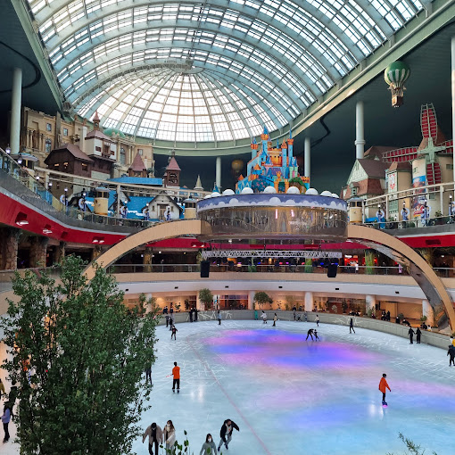
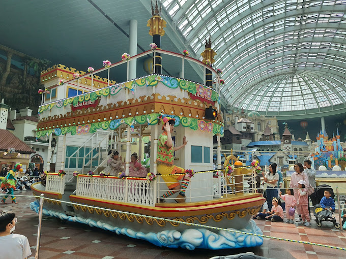
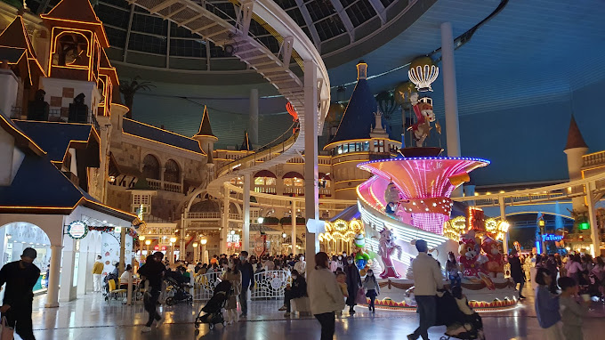
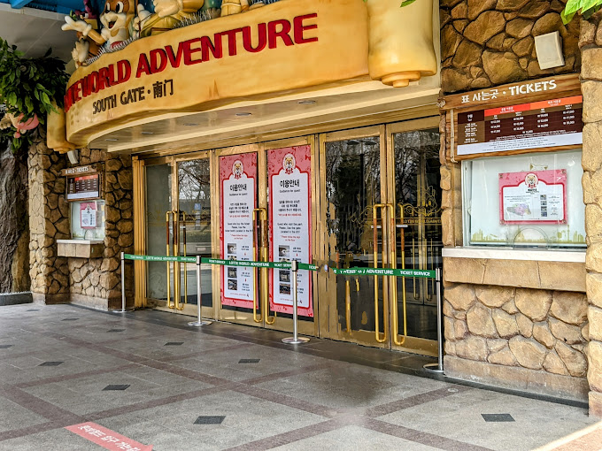
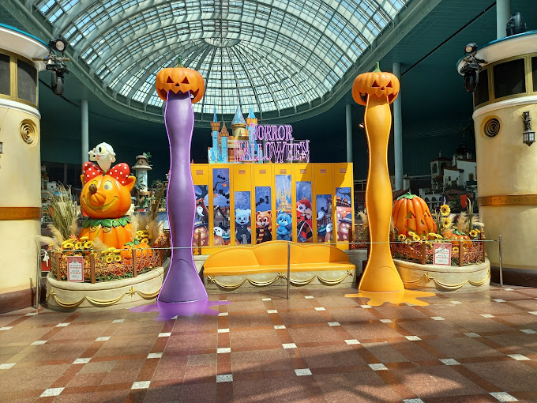
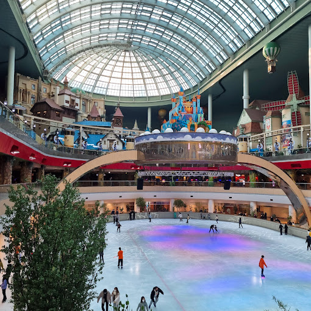
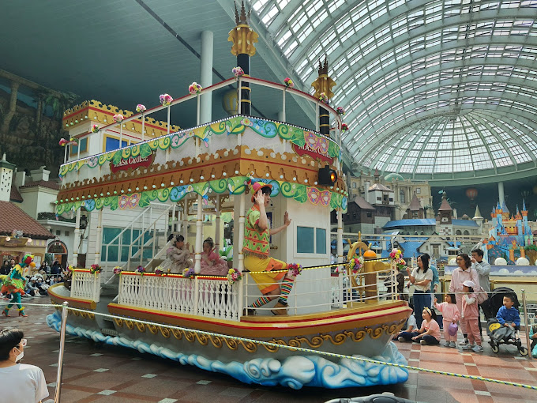
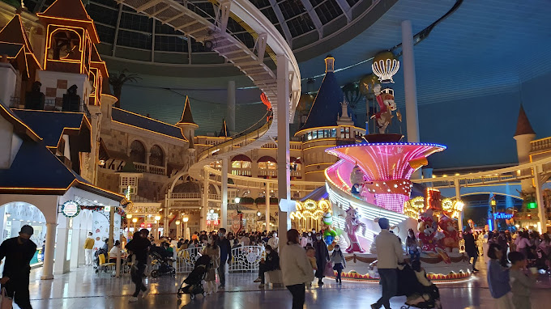
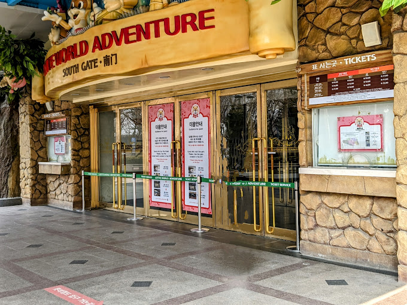

TOURIST SPOT
LOTTE WORLD
• Lotte World or Lotte World Adventure is a major recreation complex in Seoul, South Korea.
• It consists of a large indoor theme park, an outdoor amusement park called "Magic Island", an artificial island on a lake linked by monorail, shopping malls, a luxury hotel, an observation tower, a Korean folk museum, sports facilities, and movie theaters.
• Opened in July 1989, Lotte World receives approximately 7.3 million visitors each year.
• Lotte World's sister theme park, Lotte World Adventure Busan, opened in March 2022.
 








